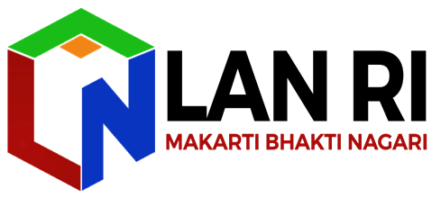

Admin Panel
Dashboard Rekap Publikasi LAN RI
Username
Password
Masuk
Username atau password salah.
Default: admin / admin2026
Admin Panel — Manajemen Publikasi
Lembaga Administrasi Negara
Admin
Lihat Dashboard
Keluar
Menu
Data Publikasi
Tambah Baru
Sistem
Pengaturan
Riwayat Perubahan
Data Publikasi
Kelola seluruh rekap publikasi LAN RI
Export JSON
Import JSON
Tambah Publikasi
Semua Unit
Semua Cluster
Semua Status
Selesai
Belum Selesai
Perencanaan
Semua Tahun
2025
2026
— records
No
Unit
Judul
Jenis
Jadwal
Tahun
Cluster
Ch
Status
Aksi
Tambah Publikasi
Isi formulir di bawah untuk menambah entri baru
Kembali
Formulir Publikasi
Identitas Publikasi
Unit Kerja
*
— Pilih Unit —
SKPP
DAPKK
SKMP
SKTAN
SKMK
STIA JKT
STIA MKS
STIA BDG
DSPK2AN
STIA JKT|STIA MKS|STIA BDG
Jenis Publikasi
— Survei / Laporan Umum —
Jurnal/Penelitian
Jurnal/Penelitian Kolaborasi
Policy Brief
Policy Paper
Laporan
Buku
Judul Publikasi
*
Cluster Kebijakan
— Belum diklasifikasikan —
Prioritas Presiden
Tata Kelola & Manajemen ASN
Pelayanan Publik
Digitalisasi
Tahun
— Pilih Tahun —
2025
2026
2027
Jadwal Publikasi
Bulan Jadwal
— Belum ditentukan —
Januari
Februari
Maret
April
Mei
Juni
Juli
Agustus
September
Oktober
November
Desember
Minggu Ke-
— Pilih Minggu —
Minggu 1
Minggu 2
Minggu 3
Minggu 4
Status & Keterangan
Status Publikasi
Dalam Perencanaan
Selesai
Belum Selesai
Keterangan / Catatan
Keterangan akan digabungkan otomatis dengan Status.
Channel Publikasi (Link)
📚
Jurnal
Pisahkan beberapa link dengan "|"
📰
Media Online
🌐
Website LAN
Pisahkan dengan "|" bila lebih dari satu
🏠
Website Unit
📸
Instagram LAN
📷
Instagram Unit
▶️
YouTube LAN
🎬
YouTube Unit
Batal
Simpan Publikasi
Pengaturan
Kelola konfigurasi dan keamanan sistem
Ganti Password
Password Lama
Password Baru
Konfirmasi Password Baru
Simpan Password
Manajemen Data
Perubahan data tersimpan otomatis di browser (localStorage).
Export Semua Data (JSON)
Import Data (JSON)
Reset ke Data Awal
Hapus Semua Data
Informasi Sistem
Versi:
1.0.0
Platform:
Static HTML + localStorage
Data Engine:
Browser localStorage
Terakhir diperbarui:
—
Total Record:
—
Riwayat Perubahan
Log aktivitas pengeditan data
Bersihkan Log
Belum ada riwayat perubahan.
⚠️
Konfirmasi
Batal
Ya, Lanjutkan